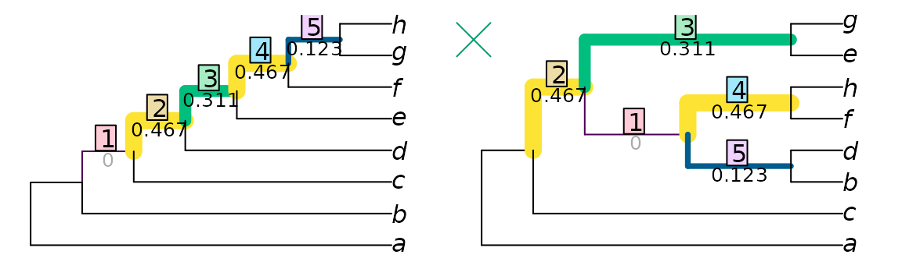
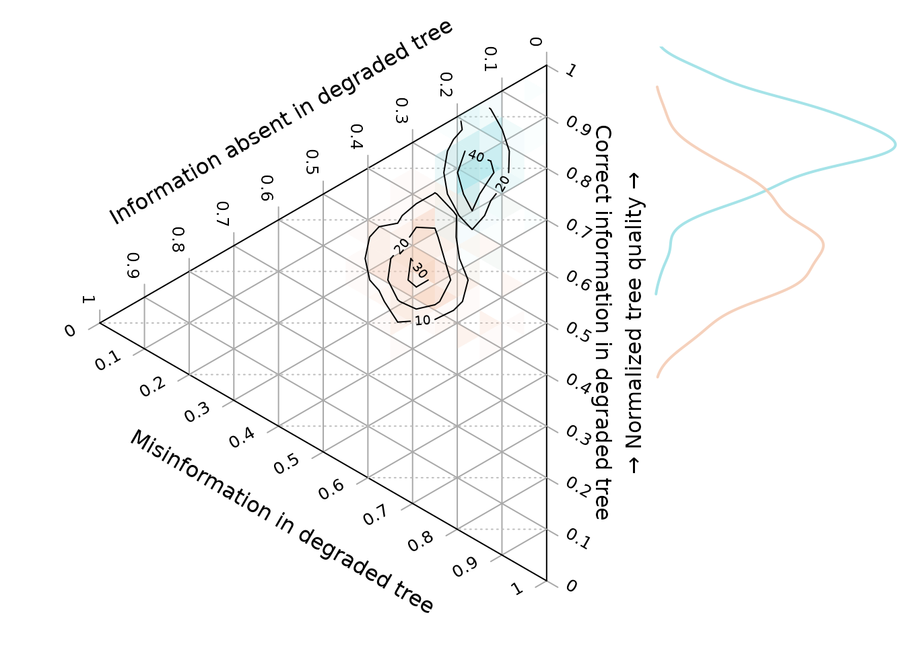

Contextualizing tree distances
Martin R. Smith
Source:vignettes/using-distances.Rmd
using-distances.RmdOnce you understand how to use ‘TreeDist’ to calculate tree distances, the next step is to provide some context for the calculated distances.
Normalizing
The maximum value of most tree distance metrics scales with the size of the trees being compared. Typically, the resolution of the trees also impacts the range of possible values. As such, it can be difficult to interpret the tree distance value without suitable context.
Normalizing a distance metric is one way to render its meaning more obvious. Selecting an appropriate normalizing constant may require careful consideration of the purpose to which a tree distance metric is being put.
The default normalization behaviour of each function when normalize = TRUE is listed in the function reference, or can be viewed by typing ?FunctionName in the R terminal.
Nye et al. tree similarity
Let’s work through a simple example using the Nye et al. (2006) similarity metric to compare two imperfectly-resolved trees.
library('TreeDist')
tree1 <- ape::read.tree(text = '(A, ((B, ((C, D), (E, F))), (G, (H, (I, J, K)))));')
tree2 <- ape::read.tree(text = '(A, (B, (C, D, E, (J, K)), (F, (G, H, I))));')
VisualizeMatching(NyeSimilarity, tree1, tree2,
Plot = TreeDistPlot, matchZeros = FALSE)
This is a nice metric to start with, because the maximum similarity between each pair of splits is defined as one. (Astute readers might worry that the minimum similarity is greater than zero – that’s a harder problem to overcome.)
As such, the maximum similarity possible between two 11-leaf trees is NSplits(11) = 8.
Normalizing against this value tells us how similar the two trees are, compared to two identical eleven-leaf binary trees.
NyeSimilarity(tree1, tree2, normalize = FALSE) / 8## [1] 0.2744048
NyeSimilarity(tree1, tree2, normalize = 8)## [1] 0.2744048This approach will result in a similarity score less than one if two trees are identical, but not fully resolved (i.e. binary).
As such, we might prefer to compare the tree similarity to the maximum score possible for two trees of the specified resolution. This value is given by the number of splits in the least resolved of the two trees:
NyeSimilarity(tree1, tree2,
normalize = min(TreeTools::NSplits(list(tree1, tree2))))## [1] 0.5488095More concisely, we can provide a normalizing function:
NyeSimilarity(tree1, tree2, normalize = min)## [1] 0.2744048This approach will produce a similarity of one if one tree is a less-resolved version of another (and thus not identical).
If we are comparing lists of trees, this best value will depend on the number of splits in each pair of trees. We can use the function pmin() to select the less resolved of each pair of trees:
NyeSimilarity(list(tree1, tree2), list(tree1, tree2), normalize = pmin)## [,1] [,2]
## [1,] 0.8750000 0.2744048
## [2,] 0.2744048 0.5000000To avoid these limitations, we may instead opt to normalize against the average number of splits in the two trees. This is the default normalization method for NyeSimilarity():
NyeSimilarity(tree1, tree2, normalize = TRUE)## [1] 0.3991342Finally, if tree1 is a ‘target’ tree – perhaps one that has been used to simulate data from, or which is independently known to be true or virtuous – we may wish to normalize against the best possible match to that tree.
In that case, the best possible score is
TreeTools::NSplits(tree1)## [1] 7and our normalized score will be
NyeSimilarity(tree1, tree2, normalize = TreeTools::NSplits(tree1))## [1] 0.3136054Normalizing to random similarity
The diameter (maximum possible distance) of the Nye et al. tree similarity metric is easy to calculate, but this is not the case for all metrics. For example, the clustering information distance metric (Smith, 2020) ranges in principle from zero to the total clustering entropy present in a pair of trees. But with even a modest number of leaves, no pairs of trees exist in which every split in one tree is perfectly contradicted by every other split in the other; as such, any pair of trees will necessarily have some degree of similarity.
In such a context, it can be relevant to normalize tree similarity against the expected distance between a pair of random trees, rather than a maximum value (see Vinh, Epps, & Bailey, 2010). On this measure, distances greater than one denote trees that are more different than expected by chance, whereas a distance of zero denotes identity.
With the quartet divergence, the expected tree distance is readily calculated: any given quartet has a one in three chance of matching by chance.
library('Quartet', exclude = 'RobinsonFoulds')
expectedQD <- 2 / 3
normalizedQD <- QuartetDivergence(QuartetStatus(tree1, tree2),
similarity = FALSE) / expectedQDThe expected distance is more difficult to calculate for other metrics, but can be approximated by sampling random pairs of trees. Measured distances between 10 000 pairs of random bifurcating trees with up to 200 leaves are available in the data package ‘TreeDistData’. We can view (normalized) distances for a selection of methods:
if (requireNamespace('TreeDistData', quietly = TRUE)) {
library('TreeDistData')
data('randomTreeDistances', package = 'TreeDistData')
methods <- c('pid', 'cid', 'nye', 'qd')
methodCol <- c(pid = '#e15659', cid = '#58a14e', nye = '#edc949',
qd = '#af7aa1')
oldPar <- par(cex = 0.7, mar = c(5, 5, 0.01, 0.01))
nLeaves <- as.integer(dimnames(randomTreeDistances)[[3]])
plot(nLeaves, type = 'n', randomTreeDistances['pid', 'mean', ],
ylim = c(0.54, 1),
xlab = "Number of leaves",
ylab = "Normalized distance between random tree pairs")
for (method in methods) {
dat <- randomTreeDistances[method, , ]
lines(nLeaves, dat['50%', ], pch = 1, col = methodCol[method])
polygon(c(nLeaves, rev(nLeaves)), c(dat['25%', ], rev(dat['75%', ])),
border = NA, col = paste0(methodCol[method], '55'))
}
text(202, randomTreeDistances[methods, '50%', '200'] + 0.02,
c('Different phylogenetic information',
'Clustering information distance',
expression(paste(plain('Nye '), italic('et al.'))),
'Quartet divergence'
), col = methodCol[methods], pos = 2)
par(oldPar)
}or use these calculated values to normalize our tree distance:
expectedCID <- randomTreeDistances['cid', 'mean', '9']
ClusteringInfoDistance(tree1, tree2, normalize = TRUE) / expectedCIDTesting similarity to a known tree
Similarity has two components: precision and accuracy (Smith, 2019). A tree can be 80% similar to a target tree because it contains 80% of the splits in the target tree, and no incorrect splits – or because it is a binary tree in which 10% of the splits present are resolved incorrectly and are thus positively misleading.
In such a comparison, of course, it is more sensible to talk about split information than just the number of splits: an even split may contain more information than two very uneven splits, so the absence of two information-poor splits may be preferable to the absence of one information-rich split. As such, it is most instructive to think of the proportion of information that has been correctly resolved: the goal is to find a tree that is as informative as possible about the true tree.
Ternary diagrams allow us to visualise the quality of a reconstructed tree with reference to a known ‘true’ tree:
testTrees <- list(
trueTree = ape::read.tree(text = '(a, (b, (c, (d, (e, (f, (g, h)))))));'),
lackRes = ape::read.tree(text = '(a, (b, c, (d, e, (f, g, h))));'),
smallErr = ape::read.tree(text = '(a, (c, (b, (d, (f, (e, (g, h)))))));'),
bigErr = ape::read.tree(text = '(a, (c, (((b, d), (f, h)), (e, g))));')
)
VisualizeMatching(MutualClusteringInfo, testTrees$trueTree, testTrees$lackRes)
points(4, 7.5, pch = 2, cex = 3, col = "#E69F00")
VisualizeMatching(MutualClusteringInfo, testTrees$trueTree, testTrees$smallErr)
points(4, 7.5, pch = 3, cex = 3, col = "#56B4E9")
VisualizeMatching(MutualClusteringInfo, testTrees$trueTree, testTrees$bigErr)
points(4, 7.5, pch = 4, cex = 3, col = "#009E73")
Better trees plot vertically towards the ‘100% shared information’ vertex. Resolution of trees increases towards the right; trees that are more resolved may be no better than less-resolved trees if the addition of resolution introduces error.
if (requireNamespace('Ternary', quietly = TRUE)) {
library('Ternary')
oldPar <- par(mar = rep(0.1, 4))
TernaryPlot(alab = 'Absent information', blab = 'Shared information',
clab = 'Misinformation',
lab.cex = 0.8, lab.offset = 0.18,
point = 'left', clockwise = FALSE,
grid.col = '#dedede', grid.minor.lines = 0,
axis.labels = 0:10 / 10, axis.col = "#aaaaaa")
HorizontalGrid()
correct <- MutualClusteringInfo(testTrees$trueTree, testTrees)
resolved <- ClusteringEntropy(testTrees)
unresolved <- resolved['trueTree'] - resolved
incorrect <- resolved - correct
TernaryPoints(cbind(unresolved, correct, incorrect),
pch = 1:4, cex = 2, col = Ternary::cbPalette8[1:4])
par(oldPar)
}
Example
Here’s a noddy real-world example applying this to a simulation-style study.
First, let’s generate a starting tree, which will represent our reference topology:
set.seed(0)
trueTree <- TreeTools::RandomTree(20, root = TRUE)Then, let’s generate 200 degraded trees. We’ll move away from the true tree by making a TBR move, then reduce resolution by taking the consensus of this tree and three trees from its immediate neighbourhood (one NNI move away).
library('TreeSearch', quietly = TRUE, warn.conflict = FALSE) # for TBR, NNI
oneAway <- structure(lapply(seq_len(200), function (x) {
tbrTree <- TBR(trueTree)
ape::consensus(list(tbrTree,
NNI(tbrTree),
NNI(tbrTree),
NNI(tbrTree)))
}), class = 'multiPhylo')And let’s generate 200 more trees that are even more degraded. This time we’ll move further (three TBR moves) from the true tree, and reduce resolution by taking a consensus with three trees from its wider neighbourhood (each two NNI moves away).
threeAway <- structure(lapply(seq_len(200), function (x) {
tbrTree <- TBR(TBR(TBR(trueTree)))
ape::consensus(list(tbrTree,
NNI(NNI(tbrTree)),
NNI(NNI(tbrTree)),
NNI(NNI(tbrTree))))
}), class = 'multiPhylo')Now let’s calculate their tree similarity scores. We need to calculate the amount of information each tree has in common with the true tree:
correct1 <- MutualClusteringInfo(trueTree, oneAway)
correct3 <- MutualClusteringInfo(trueTree, threeAway)The amount of information in each degraded tree:
infoInTree1 <- ClusteringEntropy(oneAway)
infoInTree3 <- ClusteringEntropy(threeAway)The amount of information that could have been resolved, but was not:
unresolved1 <- ClusteringEntropy(trueTree) - infoInTree1
unresolved3 <- ClusteringEntropy(trueTree) - infoInTree3And the amount of information incorrectly resolved:
incorrect1 <- infoInTree1 - correct1
incorrect3 <- infoInTree3 - correct3In preparation for our plot, let’s colour our one-away trees orange , and our three-away trees blue :
col1 <- hcl(200, alpha = 0.9)
col3 <- hcl(40, alpha = 0.9)
spec1 <- matrix(col2rgb(col1, alpha = TRUE), nrow = 4, ncol = 181)
spec3 <- matrix(col2rgb(col3, alpha = TRUE), nrow = 4, ncol = 181)
spec1[4, ] <- spec3[4, ] <- 0:180
ColToHex <- function (x) rgb(x[1], x[2], x[3], x[4], maxColorValue = 255)
spec1 <- apply(spec1, 2, ColToHex)
spec3 <- apply(spec3, 2, ColToHex)Now we can plot this information on a ternary diagram.
if (requireNamespace('Ternary', quietly = TRUE)) {
layout(matrix(c(1, 2), ncol = 2), widths = c(5, 2))
oldPar <- par(mar = rep(0, 4))
TernaryPlot(alab = 'Information absent in degraded tree',
blab = '\n\nCorrect information in degraded tree',
clab = 'Misinformation in degraded tree',
point = 'left', clockwise = FALSE, grid.minor.lines = 0,
axis.labels = 0:10 / 10)
HorizontalGrid()
coords1 <- cbind(unresolved1, correct1, incorrect1)
coords3 <- cbind(unresolved3, correct3, incorrect3)
ColourTernary(TernaryDensity(coords1, resolution = 20), spectrum = spec1)
ColourTernary(TernaryDensity(coords3, resolution = 20), spectrum = spec3)
TernaryDensityContour(coords3, col = col3, nlevels = 4)
TernaryDensityContour(coords1, col = col1, nlevels = 4)
if (requireNamespace('kdensity', quietly = TRUE)) {
library('kdensity')
HorizontalKDE <- function (dat, col, add = FALSE) {
lty <- 1
lwd <- 2
kde <- kdensity(dat)
kdeRange <- kdensity:::get_range(kde)
if (add) {
lines(kde(kdeRange), kdeRange, col = col, lty = lty, lwd = lwd)
} else {
plot(kde(kdeRange), kdeRange, col = col, lty = lty, lwd = lwd,
ylim = c(0, 1), main = '', axes = FALSE, type = 'l')
}
# abline(h = 0:10 / 10) # Useful for confirming alignment
}
par(mar = c(1.8, 0, 1.8, 0)) # align plot limits with ternary plot
HorizontalKDE(correct1 / infoInTree1, col1, add = FALSE)
HorizontalKDE(correct3 / infoInTree3, col3, add = TRUE)
mtext('\u2192 Normalized tree quality \u2192', 2)
}
par(oldPar)
}
In the ternary plot, the vertical direction corresponds to the normalized tree quality, as depicted in the accompanying histogram.
What next?
You may wish to:
Explore the Ternary package
Review available distance measures and the corresponding TreeDist functions
Construct tree spaces to visualize landscapes of phylogenetic trees
References
Nye, T. M. W., Liò, P., & Gilks, W. R. (2006). A novel algorithm and web-based tool for comparing two alternative phylogenetic trees. Bioinformatics, 22(1), 117–119. doi:10.1093/bioinformatics/bti720
Smith, M. R. (2019). Bayesian and parsimony approaches reconstruct informative trees from simulated morphological datasets. Biology Letters, 15(2), 20180632. doi:10.1098/rsbl.2018.0632
Smith, M. R. (2020). Information theoretic Generalized Robinson-Foulds metrics for comparing phylogenetic trees. Bioinformatics, 36(20), 5007–5013. doi:10.1093/bioinformatics/btaa614
Vinh, N. X., Epps, J., & Bailey, J. (2010). Information theoretic measures for clusterings comparison: variants, properties, normalization and correction for chance. Journal of Machine Learning Research, 11, 2837–2854. doi:10.1145/1553374.1553511